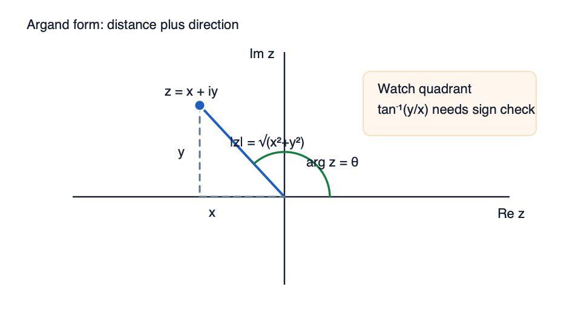
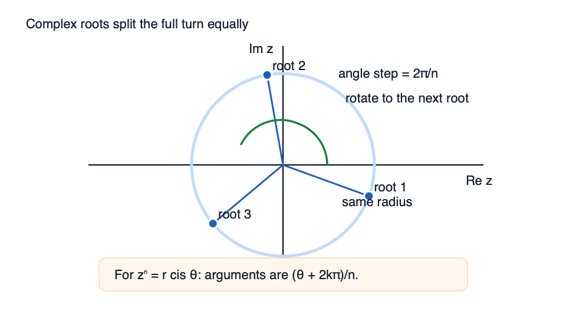
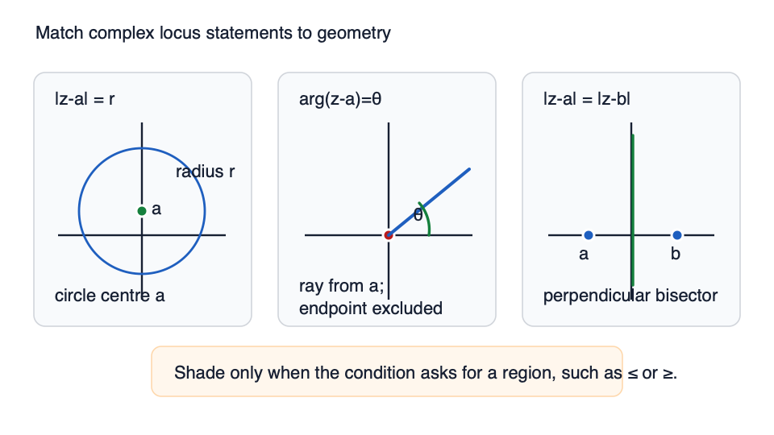

You need to add (3+2i)+(1−5i). Treating i like a real number loses the structure, so combine like parts separately.
What is the sum?
Not completed
Try a similar checked question
Find (2−3i)−(5+i).
Exam transfer
Exam transfer: in Cartesian-form questions, keep real and imaginary parts separate before using conjugates, moduli, or equations. The answer must end in a+bi form when requested.
Step 2 of 17
Multiply and replace i squared
Multiplying (2+i)(3−4i) creates an i2 term. The simplification depends on replacing i2 correctly.
What is the product?
Not completed
Try a similar checked question
Calculate (1+2i)(4+i).
Exam transfer
Exam transfer: polynomial and Cartesian complex questions often hide a mark in using i2=−1 at the right moment.
Step 3 of 17
Divide using the conjugate
You need to simplify 3−2i5+i. Direct division leaves an imaginary denominator, so the denominator must be made real.
What should you multiply the denominator by?
Not completed
Try a similar checked question
Simplify 3−2i5+i into a+bi form.
Exam transfer
Exam transfer: when asked to express a quotient in a+bi form, choose the conjugate first, then expand numerator and denominator. Do not leave a complex denominator.
Step 4 of 17
Find the modulus
The modulus of 3+4i is its distance from the origin on the Argand diagram.
Diagram

Argand form is distance plus directionModulus is distance from the origin; argument is the directed angle from the positive real axis.
Watch out: tan inverse of y over x needs a quadrant check before giving arg z.
What is ∣3+4i∣?
Not completed
Try a similar checked question
Find the modulus of 1−i.
Exam transfer
Exam transfer: modulus values feed directly into polar form, loci, powers, and roots.
Step 5 of 17
Argument and quadrant
The complex number −1+i is not in the first quadrant. Its argument must match the point on the Argand diagram.
Diagram
Argand form is distance plus directionModulus is distance from the origin; argument is the directed angle from the positive real axis.
Watch out: tan inverse of y over x needs a quadrant check before giving arg z.
Use the signs of the real and imaginary parts first. Which quadrant is the point in?
Not completed
Try a similar checked question
What is the principal argument of −1+i?
Exam transfer
Exam transfer: checking the quadrant prevents principal-argument errors; then state the answer in the required principal range.
Step 6 of 17
Cartesian to modulus-argument form
The number 1+i can be described by its size and direction instead of by real and imaginary parts.
Diagram
Argand form is distance plus directionModulus is distance from the origin; argument is the directed angle from the positive real axis.
Watch out: tan inverse of y over x needs a quadrant check before giving arg z.
What is its modulus-argument form?
Not completed
Try a similar checked question
Write −1+i in modulus-argument form.
Exam transfer
Exam transfer: convert to modulus-argument form before using powers or roots.
Step 7 of 17
Modulus-argument to Cartesian form
The form 2(cos(π/6)+isin(π/6)) gives size and angle. To return to a+bi, multiply the exact trig values by 2.
Diagram
Argand form is distance plus directionModulus is distance from the origin; argument is the directed angle from the positive real axis.
Watch out: tan inverse of y over x needs a quadrant check before giving arg z.
What is the Cartesian form?
Not completed
Try a similar checked question
Write 4(cos(π/3)+isin(π/3)) in Cartesian form.
Exam transfer
Exam transfer: when a final answer asks for Cartesian form, convert each part exactly rather than leaving trig form.
Step 8 of 17
Multiply and divide in modulus-argument form
In modulus-argument form, multiplication does not expand brackets. It combines sizes and angles.
What is the argument after multiplication?
Not completed
Try a similar checked question
For 6ei5π/6÷2eiπ/3, type the new argument.
Exam transfer
Exam transfer: polar multiplication and division are often the shortest route before powers or roots.
Step 9 of 17
Powers with de Moivre
For z=2(cos(π/6)+isin(π/6)), powers are easier in modulus-argument form than by repeated expansion.
What is the argument of z3?
Not completed
Try a similar checked question
If ∣z∣=2, what is ∣z3∣?
Exam transfer
Exam transfer: use de Moivre when powers are requested from polar or modulus-argument form.
Step 10 of 17
Root arguments are evenly spaced
The equation z3=8 has three cube roots, not just the real one. The arguments split a full turn into equal parts.
Diagram

Roots are equally spaced rotationsEach root has the same radius; the next root is found by adding the angle step 2π/n.
Key move: list all branches using arguments (theta plus 2k pi) over n.
What is the next positive argument after 0?
Not completed
Try a similar checked question
Type all arguments in 0≤θ<2π for the cube roots of 8.
Exam transfer
Exam transfer: root questions usually lose marks when only one root is found; list all evenly spaced arguments.
Step 11 of 17
Exact square roots in Cartesian form
Finding square roots exactly can be done in Cartesian form by setting (a+bi)2 equal to the target complex number.
Find the two square roots of 3+4i.
Not completed
Try a similar checked question
Find the two square roots of 5−12i.
Exam transfer
Exam transfer: exact square-root questions need both roots in Cartesian form, not only a decimal modulus-argument answer.
Step 12 of 17
Argand effects of complex operations
Complex arithmetic has geometric effects on the Argand diagram: translations, reflections, rotations, and scalings.
What is the geometric effect of conjugating z?
Not completed
Try a similar checked question
Match z↦z+(2−i) with its Argand effect.
Exam transfer
Exam transfer: when an Argand question asks for the effect of an operation, describe the movement before calculating coordinates.
Step 13 of 17
Argand multiplication and division effects
Multiplying or dividing by a complex number changes distance from the origin and direction angle.
What is the effect of multiplying by i on an Argand diagram?
Not completed
Try a similar checked question
What is the effect of dividing by 2eiπ/3?
Exam transfer
Exam transfer: use modulus and argument to describe multiplication/division transformations rather than expanding every point first.
Step 14 of 17
Modulus locus as a circle
The condition ∣z−(2+i)∣=3 says every allowed point z is the same distance from one fixed complex number.
Diagram

Locus statements become Argand geometryTranslate each condition first: fixed distance is a circle, fixed argument is a ray, equal distances give a bisector.
Key move: shade only when an inequality asks for a region.
What circle does this describe?
Not completed
Try a similar checked question
Choose the locus of ∣z+1−i∣=2.
Exam transfer
Exam transfer: Argand locus questions usually require centre, radius, and any inequality or region shading information.
Step 15 of 17
Argument locus as a ray
The condition arg(z−1)=π/4 fixes a direction from a point. It does not fix a distance.
Diagram
Locus statements become Argand geometryTranslate each condition first: fixed distance is a circle, fixed argument is a ray, equal distances give a bisector.
Key move: shade only when an inequality asks for a region.
What shape is the locus?
Not completed
Try a similar checked question
Choose the shape of arg(z+i)=π/2.
Exam transfer
Exam transfer: argument loci are direction conditions; combine them with circles or inequalities only after identifying the boundary ray.
Step 16 of 17
Complex roots of real polynomials
A real-coefficient polynomial has root −1+7i. Its non-real roots must occur in conjugate pairs.
What other complex root must also occur?
Not completed
Try a similar checked question
What quadratic factor has roots −1+7i and −1−7i?
Exam transfer
Exam transfer: when a real polynomial gives one complex root, state the conjugate root before forming a quadratic factor or dividing.
Step 17 of 17
Mixed exam transfer: arithmetic to geometry
A stripped-down exam-facing task gives w=3−2i5+i, then asks for a geometric condition involving ∣z−w∣=2.
What is w in Cartesian form?
Not completed
Try a similar checked question
Using w=1+i, choose the locus ∣z−w∣=2.
Exam transfer
Exam transfer: full complex-number questions often chain quotient simplification, modulus/argument facts, and an Argand-locus interpretation.
After this lesson
Learn is optional. When you are ready for checked evidence, move to the separate Checked Practice page.
Checked Practice passes are the required local evidence before final review.